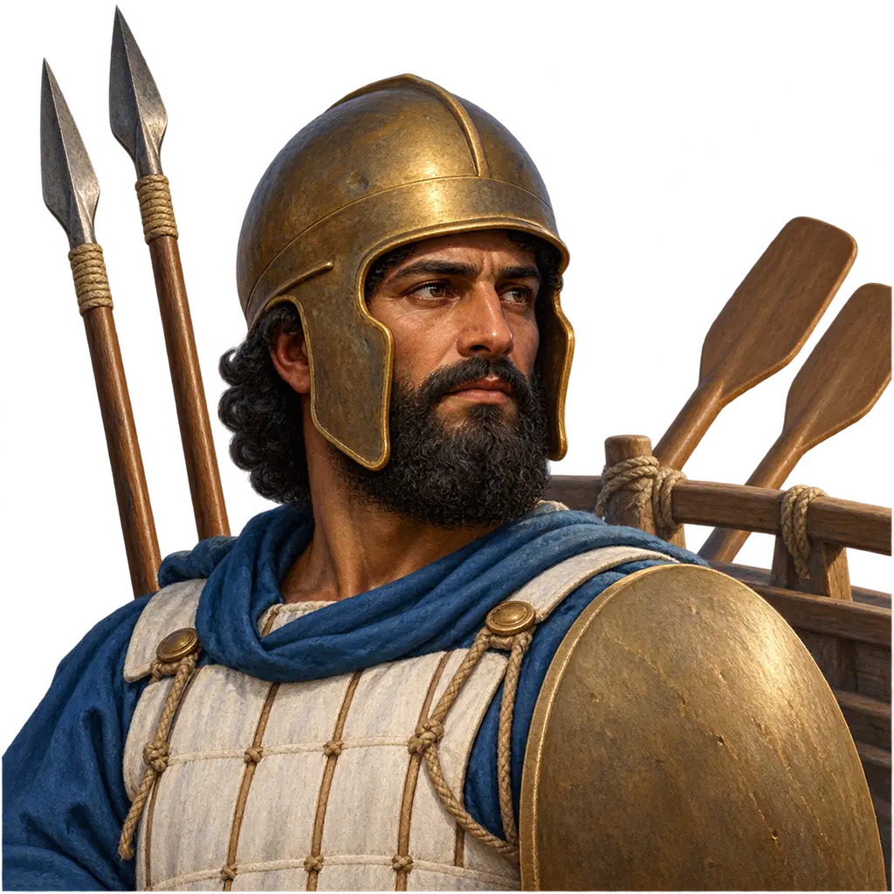
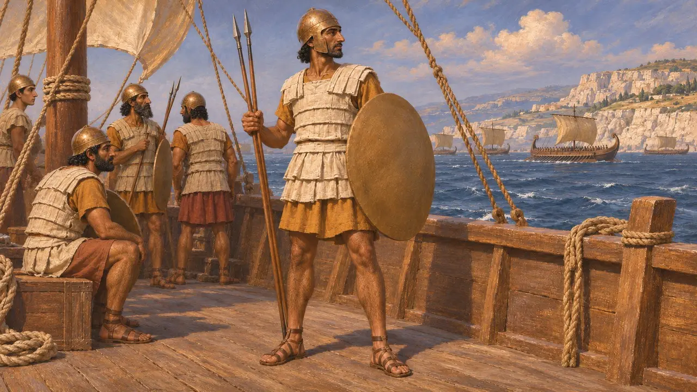
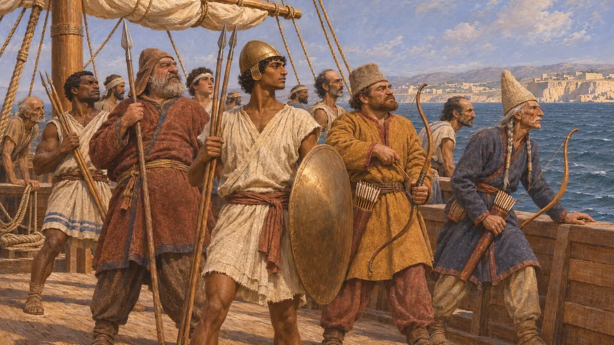
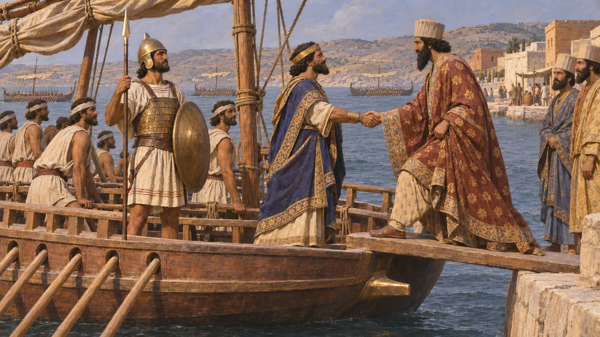
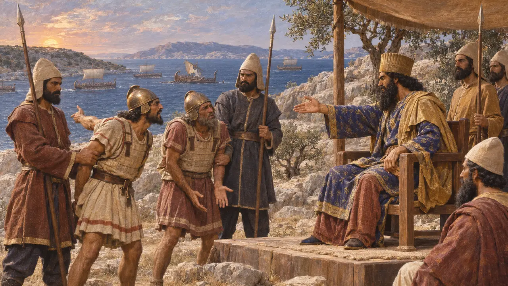

Encyclopedia › Soldiers and ships

Phoenician Marine
Fighting man of the Phoenician ships in the King's fleet, about 525-479 BCE
In the game: Level 7: Sardis Burns
The Phoenician cities of the Levant coast, above all Sidon and Tyre, supplied the largest and best squadrons of the Persian fleet from Cambyses' reign onward. Herodotus describes the Phoenician fighting men of 480 BCE as armed with Greek-style helmets, linen corslets, rimless shields and javelins, and Persian kings relied on these ships at Lade, Salamis and many smaller campaigns.
In the game: The game's arms follow Herodotus 7.89 closely. Using these men as a land unit of the army is a simplification: they fought mainly from ships, and Herodotus says Persians, Medes and Saka also served aboard as marines.

Arms described by Herodotus
Ancient accountIn his list of Xerxes' fleet, Herodotus says the Phoenicians, with the Syrians of Palestine, brought 300 ships, a figure that, like his fleet total, may be inflated. Their men wore helmets made much like Greek ones and corslets of linen, and carried shields without rims and javelins. Light linen armour probably suited men who had to move on a crowded deck and might end up in the water.
Herodotus 7.89

Who fought on deck
Ancient accountHerodotus says that on every ship of the fleet, besides the native crew and fighters, there served marines who were Persians, Medes and Saka. When he totals the army he counts thirty such men on each ship. A Phoenician galley therefore went into action with a mixed company, Phoenician javelin men alongside Iranian archers and spearmen.
Herodotus 7.96; Herodotus 7.184

The Phoenician cities and their kings
Ancient accountHerodotus names the kings who led the Phoenician contingents in 480 BCE, among them Tetramnestus of Sidon, Matten of Tyre and Merbalus of Arados. The Sidonians won the ship race Xerxes held at Abydos, and he chose a Sidonian ship for himself. Earlier, Herodotus says, the Phoenicians refused Cambyses' order to sail against Carthage, their own colony, and he did not force them.
Herodotus 7.98; Herodotus 7.44; Herodotus 7.100; Herodotus 3.19

Blame after Salamis
DisputedHerodotus tells that after Salamis some Phoenicians blamed the Ionians for the loss. Xerxes had just seen a Samothracian ship on his side ram an Athenian one, and he had the accusers beheaded. Before Mycale the Phoenician squadrons were sent away. No Phoenician account of these wars survives, so the story rests on the Greek side alone. Historians debate whether the Phoenician fleet was badly beaten or mainly withdrawn.
Herodotus 8.90; Herodotus 9.96; H. T. Wallinga, Xerxes' Greek Adventure, 2005
Sources
- Herodotus, Histories, books 3, 7, 8 and 9
- H. T. Wallinga, Xerxes' Greek Adventure: The Naval Perspective, 2005
- H. T. Wallinga, Ships and Sea-Power before the Great Persian War, 1993
- P. Briant, From Cyrus to Alexander, 2002
- J. S. Morrison, J. F. Coates and N. B. Rankov, The Athenian Trireme, 2000